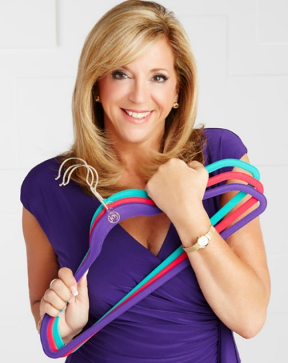

Joy Mangano
Empreendedora e inventora
Joy Mangano (Brooklyn, 15 de fevereiro de 1956) é uma empreendedora e inventora estadunidense.É a atual presidente da Ingenious Designs e tornou-se conhecida por seus trabalhos no desenvolvimento do Miracle Mop e Huggable Hangers, produtos de aplicação cotidiana para designers.
Eu sou como todo mundo lá fora. Eu sou uma mãe, eu trabalho, eu tenho uma casa para limpar, coisas para organizar. Todos nós temos semelhante necessidades, e eu as dirijo.